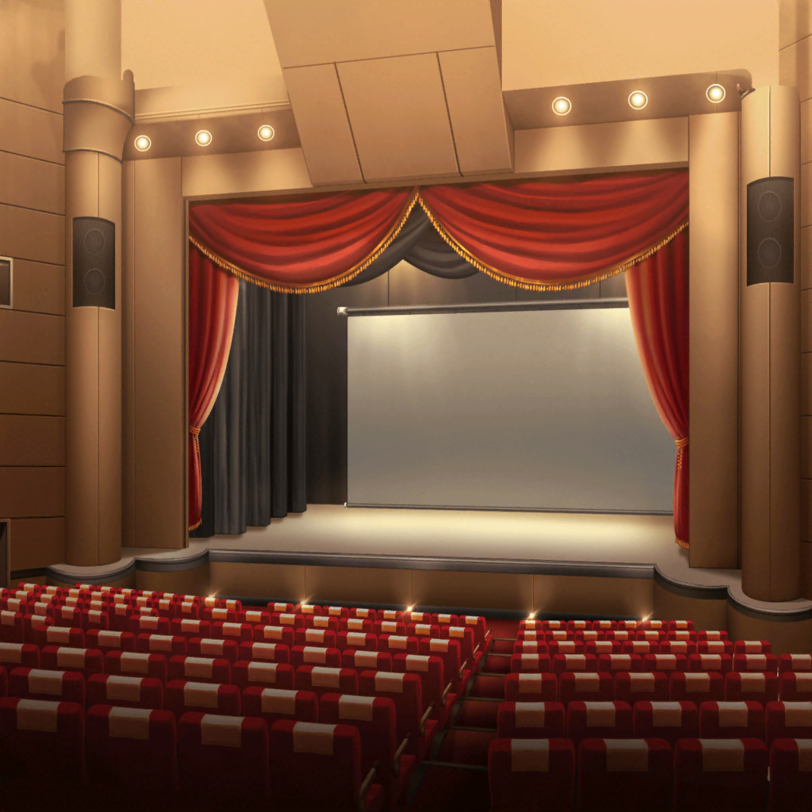

ライブ会場前
彩
……
彩
（Marmalade解散ライブ……とうとう今日が来ちゃった……）
彩
（あゆみさんが私にくれたもの……
それをちゃんと確かめないと）

ライブステージ
あゆみ
みんなーっ！ 今日はMarmaladeのライブに来てくれて、
ありがとうー！！
あゆみ
最後の瞬間まで、全力で楽しんでいってねー！！
彩
（この曲……私がMarmaladeをはじめて知った時の曲だ……）
彩
（テレビであゆみさんが歌っているのを見て、お世辞にも
上手とはいえなくて……でも……）
あゆみ
みんなも一緒に歌ってー！！ せーの！
彩
（笑顔で楽しそうに歌うあゆみさんから気づいたら目が
離せなくなってたっけ。あゆみさんはどんな時でも笑顔で
全力のパフォーマンスを見せてくれて……）
彩
……っ
彩
（まだ泣いちゃダメ！ ちゃんと、あゆみさんを
見届けるって決めたんだから！）
あゆみ
みんなー、楽しんでくれてるかなー？
あゆみ
ありがとーっ！！！
……次で最後の曲になります
あゆみ
……その前に、少しだけお話、してもいいかな？
あゆみ
今日でMarmaladeの活動は終わりです。
だけど、Marmaladeがこの世界から消えるわけじゃないよ。
もちろん、あゆみもです！
あゆみ
……みなさんのなかで、Marmaladeは、それからあゆみは
どんな存在ですか？
彩
（私にとってのあゆみさんは……）
あゆみ
きっと、歌がちょっと苦手で……
あゆみ
きめポーズがヘンテコで……
あゆみ
……感動してすぐ泣いちゃう
彩
（……だけど）
彩・あゆみ
だけど、何があっても絶対にめげない、諦めない！
どんな時だっていつも笑顔っ！
あゆみ
みんなのなかで、そんな存在になれていたらうれしいですっ。
そして、あゆみも、Marmaladeもみなさんの中で
ずっとずーっと生き続けます！
あゆみ
もしもつらいことがあった時……ポンコツなりに
がんばってたヘンなアイドルがいたなー、なんて思い出して
元気になってくれたらうれしい、かな。えへっ♪
彩
……っ
観客
あゆみーっ！！！
観客
ずっと忘れないよー！！！
あゆみ
……っ。うええ、みんなありがとう〜！！
それでは最後の曲、全力で楽しんでください――！

彩
……終わっちゃった
彩
Marmaladeは解散したんだ。
……でも……
彩
『何があっても絶対にめげない、諦めない。
どんな時だっていつも笑顔』……
彩
私はあゆみさんのそういうところに憧れていた。
私が目指すアイドルは、そんなアイドル……
彩
それをもう一度、確認することができた
彩
ん……？
麻弥ちゃんからだ
麻弥
『彩さん、ライブお疲れ様です！
実は、Marmaladeさんの解散ライブの機材を
見学させていただいたんです！』
麻弥
『いやあ〜、やっぱりこういう大きな会場の機材まわりは
興味深いですよねえ〜』
麻弥
『彩さん、よかったら合流して一緒に帰りませんか？
今からメールする地図の場所で待っていますっ』
彩
えっ！？ ちょ、ちょっと麻弥ちゃん！？
……切れちゃった……強引だなあ
彩
しょうがない。合流しよう。
……えっと、地図の場所は……
彩
……？ これって……